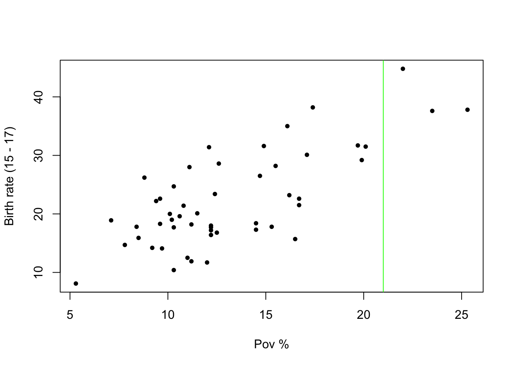

library(tidyverse)
library(ISLR2)
library(cowplot)
library(kableExtra)
library(htmlwidgets)Agenda:
Intro to statistical learning
Simple Linear regression
- Motivation
- \(\ell_2\) estimator
- Inference
- Prediction
Packages we will require this week:
Tue, Jan 31
Statistical learning
Suppose we are given a dataset:
- \(\bf X = [\bf X_{1} \ \bf X_{2} \dots \bf X_{p}]\)
- called the predictor variables / independent variables / covariates
- \(\bf y\)
- called the response / outcome / dependent variables
The goal of statistical learning is to find a function \(f\) such that \(y = f(\bf X)\), i.e.,
\[ \bf y_i = f(\bf X_i) = f(\bf X_{i, 1}, \bf X_{i, 2}, \dots \bf X_{i, p}), \]
Different Flavors: Statistical learning
- Supervised learning
- Regression
- Classification
- Unsupervised learning
- Semi-supervised learning
- Reinforcement learning
Teen birth rate vs Poverty
brth15to17: birth rate per 1000 females 15 to 17 years oldpovpct: poverty rate 1
url <- "https://online.stat.psu.edu/stat462/sites/onlinecourses.science.psu.edu.stat462/files/data/poverty/index.txt"
df <- read_tsv(url)Rows: 51 Columns: 6
── Column specification ────────────────────────────────────────────────────────
Delimiter: "\t"
chr (1): Location
dbl (5): PovPct, Brth15to17, Brth18to19, ViolCrime, TeenBrth
ℹ Use `spec()` to retrieve the full column specification for this data.
ℹ Specify the column types or set `show_col_types = FALSE` to quiet this message.df %>% head(., 10) %>% kable| Location | PovPct | Brth15to17 | Brth18to19 | ViolCrime | TeenBrth |
|---|---|---|---|---|---|
| Alabama | 20.1 | 31.5 | 88.7 | 11.2 | 54.5 |
| Alaska | 7.1 | 18.9 | 73.7 | 9.1 | 39.5 |
| Arizona | 16.1 | 35.0 | 102.5 | 10.4 | 61.2 |
| Arkansas | 14.9 | 31.6 | 101.7 | 10.4 | 59.9 |
| California | 16.7 | 22.6 | 69.1 | 11.2 | 41.1 |
| Colorado | 8.8 | 26.2 | 79.1 | 5.8 | 47.0 |
| Connecticut | 9.7 | 14.1 | 45.1 | 4.6 | 25.8 |
| Delaware | 10.3 | 24.7 | 77.8 | 3.5 | 46.3 |
| District_of_Columbia | 22.0 | 44.8 | 101.5 | 65.0 | 69.1 |
| Florida | 16.2 | 23.2 | 78.4 | 7.3 | 44.5 |
Goal
Predict the brith rate as a function of the poverty rate
colnames(df) <- tolower(colnames(df))
x <- df$povpct
y <- df$brth15to17Scatterplot
Visualize the relationship between the \(x\) and \(y\) variables
plt <- function(){
plot(
x,
y,
pch=20,
xlab = "Pov %",
ylab = "Birth rate (15 - 17)"
)
}
plt()Lines through the points
Least squares estimator
b0 <- 10
b1 <- 1.1
yhat <- b0 + b1 * x
plt()
curve(b0 + b1 * x, 0, 30, add=T, col="red")
segments(x, y, x, yhat)
resids <- abs(y - yhat)^2
ss_resids <- sum(resids)
title(main = paste("b0, b1, ss_residuals = ", b0, b1, ss_resids, sep=","))
The best fit line minimizes residuals
model <- lm(y ~ x)
sum(residuals(model)^2)[1] 1509.635summary(model)
Call:
lm(formula = y ~ x)
Residuals:
Min 1Q Median 3Q Max
-11.2275 -3.6554 -0.0407 2.4972 10.5152
Coefficients:
Estimate Std. Error t value Pr(>|t|)
(Intercept) 4.2673 2.5297 1.687 0.098 .
x 1.3733 0.1835 7.483 1.19e-09 ***
---
Signif. codes: 0 '***' 0.001 '**' 0.01 '*' 0.05 '.' 0.1 ' ' 1
Residual standard error: 5.551 on 49 degrees of freedom
Multiple R-squared: 0.5333, Adjusted R-squared: 0.5238
F-statistic: 56 on 1 and 49 DF, p-value: 1.188e-09Thu, Feb 2
In our case we want to model \(y\) as a function of \(x\). In R the formula for this looks like
typeof(formula(y ~ x))[1] "language"A linear regression model in R is called using the Linear Model, i.e., lm()
model <- lm(y ~ x + x^2)What are the null and alternate hypotheses for a regression model?
Let’s take a step back and think about what our objective is:
We want to find the best linear model to fit \(y \sim x\)
Null hypothesis is that:
There is no linear relationship between \(y\) and \(x\).
What does this mean in terms of \(\beta_0\) and \(\beta_1\)? This means that \(\beta_1 = 0\) in \(H_0\)
The alternate hypothesis is that \(\beta_1 \neq 0\).
To summarize: \[ \begin{align} H_0: \beta_1 = 0 && H_1: \beta_1 \neq 0 \end{align} \]
When we a see a small \(p\)-value, then we reject the null hypothesis in favour of the alternate hypothesis. What is the implication of this w.r.t. the original model objective?
There is a significant relationship between \(y\) and \(x\). Or, in more mathematical terms, there is significant evidence in favour of a correlation between \(x\) and \(y\)
This is what the \(p\)-values in the model output are capturing. We can also use the kable function to print the results nicely:
library(broom)
library(purrr)
summary(model) %>%
broom::tidy() %>%
mutate_if(is.numeric, round, 3) %>%
kableExtra::kbl()| term | estimate | std.error | statistic | p.value |
|---|---|---|---|---|
| (Intercept) | 4.267 | 2.530 | 1.687 | 0.098 |
| x | 1.373 | 0.184 | 7.483 | 0.000 |
We have the following terminology for different components of the model.
- Covariate: \(x\)
head(x)[1] 20.1 7.1 16.1 14.9 16.7 8.8- Response: \(y\)
head(y)[1] 31.5 18.9 35.0 31.6 22.6 26.2- Fitted values: \(\hat{y}\)
yhat <- fitted(model)
head(yhat) 1 2 3 4 5 6
31.87154 14.01805 26.37815 24.73014 27.20216 16.35273 - Residuals: \(e = y - \hat{y}\)
res <- residuals(model)
head(res) 1 2 3 4 5 6
-0.3715352 4.8819549 8.6218464 6.8698609 -4.6021608 9.8472677 Some other important terms are the following:
- Sum of squares for residuals:
\(SS_{Res} = \sum_{i=1}^n e_i^2 = \sum_{i=1}^n (y_i - \hat{y}_i^2)\)
- Sum of squares for regression:
\(SS_{Reg} = \sum_{i=1}^n (\hat{y}_i - \bar{y})^2\)
- Sum of squares Total:
\(SS_{Tot} = \sum_{i=1}^n ({y}_i - \bar{y})^2\)
Another important summary in the model output is the \(R^2\) value, which is given as follows:
\[ R^2 = \frac{SS_{Reg}}{SS_{Tot}} \]
Let’s have a look at what this means in the following example. I’m going to create the following synthetic examples.
x <- seq(0, 5, length=100)
b0 <- 1
b1 <- 3
y1 <- b0 + b1 * x + rnorm(100)
y2 <- b0 + b1 * x + rnorm(100) * 3
par(mfrow=c(1,2))
plot(x, y1)
plot(x, y2)model1 <- lm(y1 ~ x)
model2 <- lm(y2 ~ x)
par(mfrow=c(1, 2))
plot(x, y1)
curve(
coef(model1)[1] + coef(model1)[2] * x,
add=T, col="red"
)
plot(x, y2)
curve(
coef(model2)[1] + coef(model2)[2] * x,
add=T, col="red"
)The summary for model1 is:
summary(model1)
Call:
lm(formula = y1 ~ x)
Residuals:
Min 1Q Median 3Q Max
-2.5373 -0.6707 -0.0229 0.7047 3.3523
Coefficients:
Estimate Std. Error t value Pr(>|t|)
(Intercept) 0.89300 0.20612 4.333 3.57e-05 ***
x 3.04796 0.07122 42.796 < 2e-16 ***
---
Signif. codes: 0 '***' 0.001 '**' 0.01 '*' 0.05 '.' 0.1 ' ' 1
Residual standard error: 1.038 on 98 degrees of freedom
Multiple R-squared: 0.9492, Adjusted R-squared: 0.9487
F-statistic: 1831 on 1 and 98 DF, p-value: < 2.2e-16The summary for model2 is:
summary(model2)
Call:
lm(formula = y2 ~ x)
Residuals:
Min 1Q Median 3Q Max
-7.2686 -1.8646 -0.1205 1.8310 7.4409
Coefficients:
Estimate Std. Error t value Pr(>|t|)
(Intercept) 1.8819 0.5412 3.477 0.000756 ***
x 2.6740 0.1870 14.300 < 2e-16 ***
---
Signif. codes: 0 '***' 0.001 '**' 0.01 '*' 0.05 '.' 0.1 ' ' 1
Residual standard error: 2.726 on 98 degrees of freedom
Multiple R-squared: 0.676, Adjusted R-squared: 0.6727
F-statistic: 204.5 on 1 and 98 DF, p-value: < 2.2e-16THe last thing we’re going to talk about in simple linear regression is prediction. It’s the ability of a model to predict values for “unseen” data.
Let’s go back to the poverty dataset.
x <- df$povpct
y <- df$brth15to17
plt()
Suppose we have a “new” state formed whose povct value is \(22\)
plt()
abline(v=21, col="green")
What is the best guess for this prediction going to be? We could consider the regression line
plt()
abline(v=21, col="green")
lines(x, fitted(lm(y~x)), col="red")and our best prediction is going to be the intersection. In R we can use the predict() function to do this:
new_x <- data.frame(x = c(21))
new_y <- predict(model, new_x)
new_y 1
33.10755 If we plot this new point we get
plt()
abline(v=21, col="green")
lines(x, fitted(lm(y~x)), col="red")
points(new_x, new_y, col="purple")We can make predictions not just for a single observation, but for a whole collection of observations.
new_x <- data.frame(x = c(1:21) )
new_y <- predict(model, new_x)
new_y 1 2 3 4 5 6 7 8
5.640638 7.013984 8.387329 9.760674 11.134020 12.507365 13.880711 15.254056
9 10 11 12 13 14 15 16
16.627401 18.000747 19.374092 20.747438 22.120783 23.494128 24.867474 26.240819
17 18 19 20 21
27.614164 28.987510 30.360855 31.734201 33.107546 This is what the plot looks like:
plt()
for(a in new_x$x){abline(v=a, col="green")}
lines(x, fitted(lm(y~x)), col="red")
points(new_x %>% unlist(), new_y %>% unlist(), col="purple")
Footnotes
percent of the state’s population living in households with incomes below the federally defined poverty level↩︎